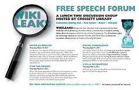

|

Free Speech Forum: WikiLeaks Edition
A lunchtime discussion group hosted by Crossett Library. We sit down in the Dining Hall on four Thursdays at noon to discuss various free speech issues through the prism of WikiLeaks. A basic understanding of WikiLeaks and the controversy its caused is all you need to participate!
We're back on Thursday, April 21st at noon. If you haven't participated before, now's a great time to start!
Below is a summary of previous discussions, including a brief description of the week's topic, links to relevant articles, and interesting thoughts from the participants.
Define Journalism
3/10/11
"According to Time Magazine WikiLeaks may become "as important a journalistic tool as the Freedom of Information Act." While Time
characterizes WikiLeaks as a tool for journalists, WikiLeaks has frequently called what it does as a form of "scientific journalism." What's the difference between scientific journalism and journalism? How do the answers to these questions impact questions surrounding WikiLeaks' ethical responsibilities?
Relevant Articles
Dealing With Assange and the WikiLeaks Secrets
U.S. Sends Warning to People Named in Cable Leaks
NY Times considers creating an 'EZ Pass lane for leakers'
Various Remarks
C: Assange calls himself "Editor-in-Chief" of WikiLeaks...can we properly assess WikiLeaks without understanding the motives of its editor?
F: Scientific journalism is essentially true objectivity, providing the rawest data without any sense of spin...but are we losing a sense of narrative when we remove the "spin"?
B1: WikiLeaks is the "roots of the journalistic tree"; is journalism built upon the roots, or is WikiLeaks and the stories based upon their data all part of one journalistic tree?
B2: "Source brokers", such as newspapers, are intermediaries between sources and the public. But are reporters taking their own "cut" and using sources as assets?
B3: WikiLeaks is filling the gap in journalistic courage. Do journalists self-censor, and is WikiLeaks providing a service by giving it all to us?
|